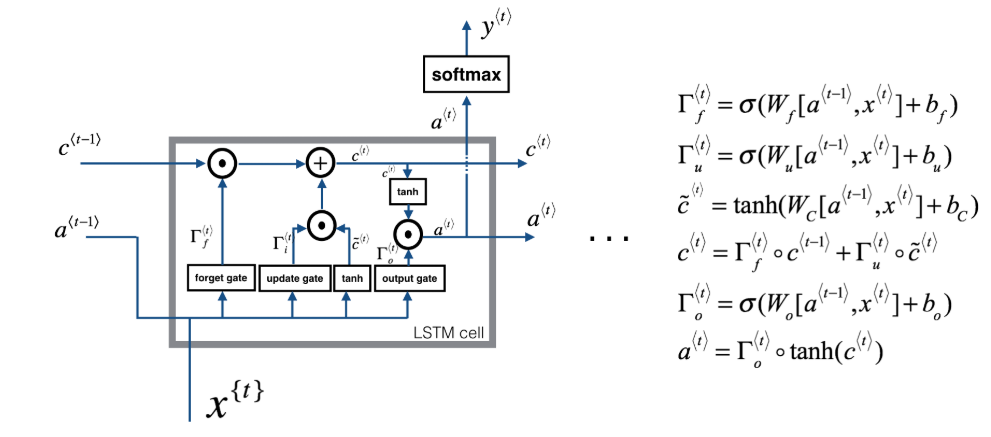

LSTMs
A more robust version of the Gated Recurrent Unit, Long-Short-Term Memory cell provides a powerful utility for learning feature importance over potentially much-longer distances.
Key Differences
Andrew Ng diagrams this whole process nicely with the following.
from IPython.display import Image
Image('images/lstm_ng.PNG')
Couple things to point out here
Two Tracks
Recall that in the GRU architecture, the output was the memory cell– or rather, c==a
Here, however, there’s both an explicit memory cell that spans the top of each cell as well as an activation value that gets passed along the bottoms.
Explicit Gates
The GRU had an update gate that dictated how to let things in and out of memory. The Gamma_u value determined everything you learned from your input data and one-minus that was everything you forgot from existing memory.
In the LSTM architecture, we have explicit update and forget gates that determine our cell values, as well as an output gate, Gamma_o.
In Summary
The more canonical blogpost about LSTMs includes this clean visual to show how all of these pieces fit together.
Image('images/lstm_colah.PNG')
In order we’ve got:
- The Forget Gate (two left-most icons) uses the input and previous activation to dictate what we forget from our cell.
- The middle four icons make up our Update Gate
- First we determine what and how to learn from the input and previous activation
- Then we add this information, elementwise, to our memory cell that’s already been cleaned of any prior memory we didn’t want.
- At this point, the memory cell that carries over to the next layer is locked in
- Finally, the last three icons govern how we define our output and the activation value passed to the next layer
- Note that by construction, this calculation involves both remembered features from above and activation-specific features below